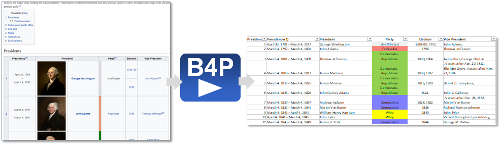

Obtain S&P 500 and NASDAQ 100 listings
The following program example demonstrates retrieving an HTML table from Wikipedia, doing the necessary
cleanups and generating a table listing one president per row.

Information source: Wikipedia List of Presidents of the United States
The Full Program
include ( Style Library ); // Include this library if you want to use the 'table style ...' functions.
file download overwrite ( "https://en.wikipedia.org/wiki/List_of_presidents_of_the_United_States", presidents.html );
table load ( presidents, presidents.html, HTML, 'id="Presidents"' );
// Strip all footnote references and new lines in the fields, and the last table row with footnotes inside
table delete rows ( presidents, table length( presidents ) -1 );
table process all cells ( presidents, [.] = replace all( str([.]), { '[?]', new line, '- '}, {'','','-' } ) );
// Remove the blank column originally containing portraits and put president name into all rows
table save( presidents, "as saved.csv" );
table delete columns ( presidents, {Portrait, Party } );
table rename column headers ( presidents, {"Term", "Party (1)","Name (Birth–Death)"}, {Period, Party,President} );
table fill vertically ( presidents, President );
table consolidate ( presidents, President, { Election, Vice President }, append, ", " );
table initialize ( party colors, // Define party colors
{{ Party Name, Colors }, { Unaffiliated, gray 15 },
{ Democratic, azur }, { Republican, imperial red },
{ Federalist, coral }, { Whig, yellow },
{ "Democratic-Republican", excel light green }, { National Union, ocre } } );
// Add some colors and styles
table process ( presidents, table style cells( presidents, Party, row(), single,
fill color, [ party colors : Party Name, [Party], Colors ] ) );
table style columns ( presidents, { "Period", "President", "Vice President" }, sheet, column width, 30 );
table style columns ( presidents, { Party, Election }, sheet, column width, 20, horizontal align, middle );
table style rows ( presidents, 0, table, boldface, true );
table style table ( presidents, sheet, wrap text, true, autofilter, 0, freeze rows, 1 );
table save excel file ( presidents, "All U.S. Pesidents", "Images\Presidents.xlsx" );
// Optionally, save in HTML format, too.
translate style attributes for html (presidents);
table save ( presidents, "Images\Presidents.html", HTML );
table list ( presidents, briefly, 5, 1st col, 1, last col, 4 ); // List first and last five presidents on the screen.
The Output
Row #: Code Text _______________________________________________________
10: table delete rows ( presidents, table length( presidents ) -1 );
11: table process all cells ( presidents, [.] = replace all( str([.]), { '[?]', new line, '- '}, {'','','-' } ) );
12:
13: // Remove the blank column originally containing portraits and put president name into all rows
14:
15:
16: table save( presidents, "as saved.csv" );
17:
18: table delete columns ( presidents, {Portrait, Party } );
19: table rename column headers ( presidents, {"Term", "Party (1)","Name (Birth–Death)"}, {Period, Party,President} );
^
Function call: table rename column headers(presidents,{'Term','Party (1)','Name (Birth–Death)'},{'Period','Party','President'})
Table headers: No.,Name (Birth–Death),Term[15],Party[16],Party[16] (1),Election,Vice President[17]
2nd function parameter (existing columns to rename) = {'Term','Party (1)','Name (Birth–Death)'}:
Header name 'Term' not found.
Specified table column name or number is invalid.
Code execution will stop. Going to interactive mode
-------------------------------------------------------------------------------
Type 'help' for help, 'docs' or 'toc' for online B4P documentation.
>> View the generated HTML file with the formatting included:
Test Click on the file name open the file with Excel (.xlsx) :
Presidents.xlsx, and
Presidents.html.